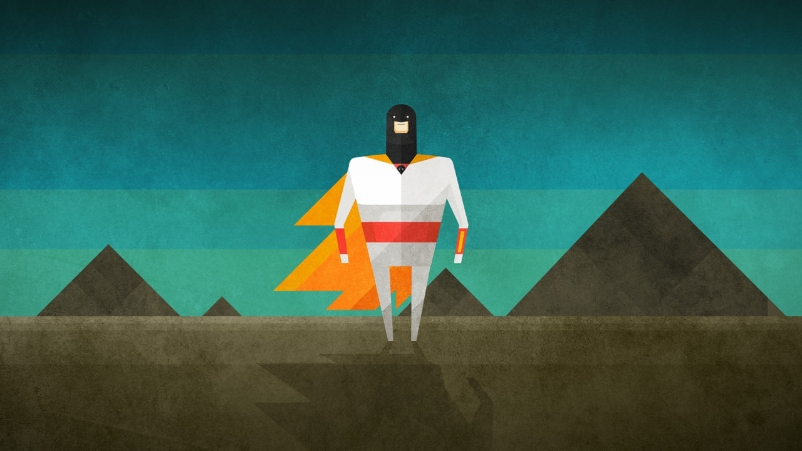
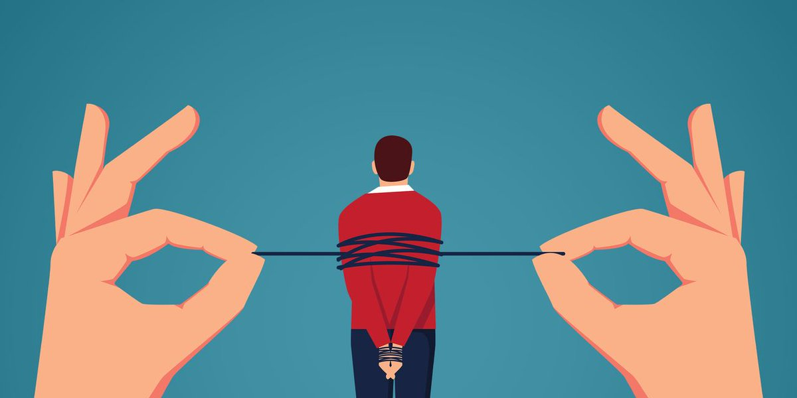

2022 年第四季度总结
这里记录下第一季度自己的一些想法，为了日后翻阅方便！
- 十月
- 年薪百万的迷惘
- 墨问西东
- 谁在制造问题
- 每天问自己的事
- 聊聊团队协同和协同工具
- 聊聊自媒体
- 万事开头难
- 卖桃者说
- 十一月
- 选择专注而非一心多用
- 坚持自己的内心
- 反向心理
- 老想着成功干嘛
- 怎样才是有效阅读
- 后悔最小化框架
- 十二月
- 读书读不到的知识
- 死去元知万事空
- 有氧运动
- 先做成一件事
- 近朱者赤近墨者黑
- 关于房屋交易的经验
- 软件工程是个面包机
十月
我想让这个世界记得，你曾经来过。
一个人生命中的最大幸运，莫过于在他的人生中途，即在他年富力强时发现了自己的人生使命。—— 茨威格《人类群星闪耀时》

一 年薪百万的迷惘
不是凡尔赛，不是矫情，就是另一种迷茫！- 链接
说的太好了！保持好奇心、多读书、培养一些爱好！
从本质上看，我的状态仅仅是对这个世界比你多一点好奇心和激情。这可能来自人的天性，也可能来自我读了很多与金钱、技能提升无关的书籍，也就是「无用之书」。对我来说读书总是让人平静和愉悦，读好书其实是和现存或已经离开这世界的优秀作者对话，对话内容往往是他几年几十年的经历和思考成果。多读书吧。
另外，我从不推荐成功学。世界不欠我们一个成功，我们也不欠世界的。如果你能够养活自己，照顾好家人，尽可能保证自己不会被淘汰，资金也做了很好的分配，日常收入、稳健投资、保险都有了，那就很好啊。你可以躺平，无所事事，或者看花看鸟，关键是你自己能情绪自洽就可以。
我经常引用李海鹏的话：老想着成功干嘛呀？就好像我们的智力不足以应付不追求成功的生活似的。如果你没办法做到自洽，就像你问题中描述的那样，你也没什么雄心壮志，那么培养一些爱好，是很好的选择，因为爱好能为你增加体验，而体验是这个世界带给我们的礼物。
我以为人活在世界上有这么几件事很重要：健康，爱情，使命，体验。前三点保证了最后一点。
健康是第一位的，是基本盘，生病了，会打消掉我们所有的雄心壮志，让我们陷落在低谷，所以，我从来不提倡，把身体逼的太紧。身体不舒服的时候，一定要休息。平时呢，通过规律的运动提升身体的免疫力，让自己强韧起来。年龄大一点，身体就越需要保养和磨砺，要控制，要懂得取舍，而不是任意而为，让身体告警。
爱情就不用说了，罗素说过，幸福的根源之一就是爱情，会带来「狂喜」，这是其他任何经历都做不到的；爱情能减轻孤独，让你对生活不再那么恐惧；爱情能创造最美好的人类生活，仿佛天堂的缩影。
使命则是每个人来到这个世界给自己的一个定位，你要干什么，能干什么，你做的事情，对这个世界的价值，是不是让世界变得好了一点点。当我们看到他人受苦、看到饥饿的孩子、看到被压迫的人民、看到被虐待的老人，看到人类的孤独、贫穷、痛苦，内心都会难以平静。我们活着，就是为了减轻一些这种苦难，不仅为了帮助他人，还因为我们自己也是这种苦难的受害者。
多读书，多些体验，free your mind。
二 墨问西东
池建强·让时间为你证明
我们应该要最大限度的掌控自己的工作和生活。人生不足百年，每一天都应该快乐并有价值。这么看起来，我创业的诉求，还挺朴素的。
疫情时代，人们嘴里念叨着内卷和躺平，脑子被灌输的是，某一种人生，你不要去想，你不配拥有，你不该去追求。顺从、麻木、妥协、调侃、无助、凑合，很多人的心灵变得苍老，血液中没有希望。
我不希望这样，我们选择尝试生活中的另一种可能，不甘心在世界指定的圈子里跳舞，不愿意重复无数人重复过的人生轨迹。旧事物衰败的时候，正是新事物崛起的良机。对于那些注定要发生的变革，宏观状况不景气正是最好的机会。我常说的一句话是，任何时候都有机会，就看上你能赶上哪一辆车了。
三 谁在制造问题
让时间为你证明！
在一个剧烈变化的时代，人们的问题总是很多，然而我并没有确切的答案，大部分都没有。—— 池建强
如果一个企业的创始团队和企业的员工总是这种相互「算计」的逻辑，是很难做成好的企业和产品的。你觉得我工资高工时短上班摸鱼，我觉得你让我加班还不想给钱，那还咋工作呢？
- 企业处于发展的上升期，业务蒸蒸日上
- 这样才有奋斗的价值和立场
- 企业利益和员工利益的一致性
- 有利润的情况下，企业舍得让利给员工，员工自然有积极性
企业文化、仪式感、员工关怀、办公环境，都没有上面两个来的实在。另外，人员的自身素质也非常重要，即招聘的时候不要降低标准，宁缺毋滥！这样，身边都是优秀的人，你也会不自觉的变得优秀了。之后就是做更多的事情，而不是搞员工管理（主要说的是小规模团队）。
我们可以引申一下，在遇到问题的时候，问一句，这个问题是怎么来的。我们应该解决掉问题，还是解决掉问题的根源。
创业者不喜欢人员空转，就会潜意识的创造问题，很多都是伪问题，这会增加无谓的工作量。搞得自己无比忙碌，公司上下也特别忙，看起来红红火火，都在解决问题，其实这些问题都是自己拼命制造出来的。
四 每天问自己的事
每天结束时，通过写日记回顾自己的一天，是很好的总结和改进的方式。
如果你不知道应该写点什么，又不想记流水账，不如添加一个固定模版，每天问自己一些问题。答案是，你在乎什么就问什么。今天分享三套模版，它们都有明确的针对性，看看哪套适合你吧。
- 第一套模板
如果你时常感觉忙碌了一天，在关键目标上却没有取得进展。请注意这四个问题的前提是，你需要找出对你最重要的一件事，作为当日的亮点目标（highlight）。
- 你的亮点是什么？（需要提前找到当日亮点任务）
- 你有没有为它腾出时间？（有没有空出时间奋力完成它）
- 你的注意力和能量水平如何（按 10 分制计算）？（身体状态和注意力水平）
- 你今天尝试了什么策略，结果如何？（如何改进日常作息）
- 第二套模板
如果你想提高幸福感，改善人际关系，通过更充实地活着来找到人生的意义。每天回答这些问题只需要 3 分钟，但它很难坚持，所以他花钱请人每天打电话给他，确保他完成这些回答。
- 我是否尽了最大努力来增加我的幸福？
- 我是否尽力去寻找意义？
- 我是否尽了最大努力去参与？
- 我是否尽力建立积极的关系？
- 我是否尽了最大努力设定明确的目标？
- 我是否尽力在实现目标方面取得进展？
- 第三套模板
最好的模版，不是别人的，而是你自己的。你在意什么，想要什么，就应该问自己什么。我没有使用模版，因为已经习惯去写这些内容。你也可以想一想，什么是你现在最在乎的事情，如何在这件事上取得进展，每天问自己一遍。
- 昨晚睡的如何，为什么睡的好，为什么不好？
- 昨天孩子们的变化，我与家人有什么互动？
- 我有什么困惑和烦恼？
五 聊聊团队协同和协同工具
国内外的企业 IM 的本质差别在于：一个是企业管理，一个是企业文化！- 链接
- 企业管理
Slack/Discrod 主要是通过建 Channel ，而国内的 IM 则主要是拉群。很明显，Channel 的属性是相对持久的，而群的属性则是临时的。所以，Channel 这种方式明显是有管理的属性的，而拉群则是没有管理的。
Channel 就是一个信息分类，相当于邮件分类，Slack 的 回复区和 Discord 的子区就像是把同一个主题信息时行聚合的功能。这明显是懂管理的人做的，而国内的拉群一看就是不懂管理的人干的，或者说是就是满足这些不懂管理的人的需求的。
- 企业文化
团队协作和团队工作最大的基石是信任，如果有了信任，没有工具都会很爽，如果没有信任，什么工具都没用。信任是一种企业文化，这种文化不仅包括同级间的，还包括上下级间的。但是，因为国内的管理跟不上，所以，就导致了各种不信任的文化，而需要在这里不信任的文化中进行协同工作。
- 监控员工
- 有详细的已读标注
- 发出的信息不能修改，不能删除，非常有限地可撤回
而国外的 IM 则是，发出的信息可以修改/删除，没有已读标准，也不会监控员工。这就是，畸形的企业管理和企业文化下，就会导致畸形的协同工具
一个环境对一个人的认知会有非常大的影响，找一个好的环境是非常重要，如果不知道什么环境是好的，那就先从不使用钉钉为工作协同软件的公司开始吧。
- 协同工具
协同的前提条件是你需要有一个基于信任的企业文化，还需要有有结构化思维的科学的管理思维。没有这两个东西，给你的团队再多的工具都不可能有真正好有协同的。
个人觉得 IM 这种工具包括会议都不是一种好的协同工具，因为这些工具都无法把信息做到真正的结构化和准确化，用 IM 或是开会上的信息大多都是碎片化严重，而且没有经过深度思考或是准备的，基本都是即兴出来的东西，不靠谱的概率非常大。
好的协同工具是可以互相促进互相激励的，就像一个足球队一样，当你看到你的队友在勇敢地争抢，拼命地奔跑，你也会被感染到的。所以，好的协同就是能够跟一帮志同道合，有共同目标，有想法，有能力的人一起做个什么事。所以，在我心中我最喜欢的协同工具从来都是创作类的，不是管理类的，更不是聊天类的。
管理和聊天的协同软件会让你产生一种有产出的假象，但其实不同，这种工具无论做的有多好，都是支持性的工具，不是产出类的工具，不会提升生产力的。包括 Github 发布的 Copilot，使用像 Google Doc 这样的协同文档工具，等等。
- 未来展望
未来的企业，那些管理类的工具一定会被边缘化的，聊天类的会被打成一个通知中心，而创作类的会大放异彩，让大家直接在要干的事上进行沟通、交互和分享。
六 聊聊自媒体
内容才是核心
- 自媒体经营的不是流量，而是内容！
流量从来都是来自于好的内容，不要舍本逐末，好的内容，有价值的内容永远都是稀缺的东西，有了内容才不会被平台绑架，相反还可以反向控制平台。所以，创作内容是头等大事，没有之一。
- 任何人都应该经营的是资产，而不是负债！
对于资产的意思就是你要学会成体系成建制的组织你的内容，打造相关的产品或品牌，这些产品和品牌会让你有长期不断的 “睡后收入”，而负债则不是。打工就是一种负债人生，他要你不断地工作，你不工作就没有了收入，所以是一种负债人生。
所以，如果自媒体只是在蹭热点搞流量的话，本质是一种负债，本质上和打工没有什么差别。最好的不是推荐你，而是你的内容或产品，推荐你的资产，而不是你的个人。如果不是下面这个过程，那你做的事就是在用体力拼命。
个人 -> 产品/内容 -> 引用/索引/转载 -> 长期流量 -> 产品/内容
资产 供应链 资产
你不用创作了，你的流量还在不断的有，因为有价值的内容好的产品自己会传播…….这是平台最害怕的人了，因为他们不会帮平台卖命，而平台反过来对他们产生依赖。高端玩家是创作成体系有价值的内容或产品，并打造自己的内容或创作的供应链。
- 什么是长期内容或是产品？
- 你什么时候来看都是不会过时的 - 很快过时的东西都是没有意义的
- 人能从中得到成长的 - 获得启发、认识自己、获取技能、找到目标
- 让人感到美好和轻松的 - 娱乐、解压、美好
七 万事开头难
对于很多人来说，做一件事情不难，但是开头很难。- 链接
我在以色烈当伞兵时，一次，有个将军来给我们讲实战战术。他告诉我们，步兵战术其实只有一种：行进中开火。你一边开火一边朝着敌人冲过去，火力让敌人抬不起头来，不能朝你开火 (当一个军人喊：“掩护我”的时候，他的意思就是“在我冲过街时候，你朝敌人猛烈开火，迫使他猫起来，没法朝我开火)。前进了，你就可以占领阵地，接近敌人，这样你的胜算要大的多。你要是不往前冲，敌人就有时间来搞清楚形势，这可不妙。你要是不开火，敌人就要朝你开火，撂倒你。—— 《JOEL ON SOFTWARE》
大多数时候，我们的生活和工作也是如此。我们不会随时随地有惊人的洞见，知道该怎么一步一步一步的做下去，就取得全盘的胜利。我们的人生和我们的工作，往往面对的都是全开放问题。甚至不是只有一个向左走，还是向右走的选择。往左走也是人生，向右行还是人生，很多时候，我们没办法评估。
鲁迅说过一句话，希望本是无所谓有，无所谓无的。这正如地上的路，其实地上本没有路，走的人多了，也变成了路。 没有人知道那唯一的正确道路在哪里，你要等迷雾消散？对不起，未来永远是扑朔迷离的，人生的迷雾永远无法消散。我们只能一步一步的前进，在行进中开火，一个阵地一个阵地的缓慢往前。
八 卖桃者说
总结与思考
- 什么时候可以考虑离职呢？
第一，你确实在这公司没成长了，你每天在空转，你在消耗自己，你本是一把利剑，现在快被磨成废铜烂铁了。
第二，你讨厌所在团队的人文环境，大家做一些看起来无厘头、很可笑的事情，这已经影响了你的身心健康。
第三，工资和实力不匹配，沟通无果，无法共鸣。
- 说实话，不丢人
没有深入研究或直接参与，别靠直觉评论其他领域的东西。说不知道挺好，不丢人。
- 脚踏实地，仰望星空
与其临渊羡鱼，不如退而结网！
这是做事的心态，与其焦虑地空想，与其羡慕别人的成绩，不如脚踏实地耕耘，把愿望付诸点滴行动。裁员有时是不可避免的，可以挑一个空隙，把自己的短板一个个地写了下来，并针对性列出了解决方案。做实干家，脚踏实地，说再多的道理，谈再多的情怀，如果不实干，那都没有意义。
从书中学，和高人聊，在事上练！
（王兴）我的大部分时间还是用在读书、交流、思考、传播上。我需要确保对外界的认知具备较好的前瞻性，建立对过去、未来的认知框架。看书有利于建立宏观的框架，但是书的问题是滞后，所以你要跟各方面的专家去交流，包括内部和外部的专家。读书和交流是两种输入方式。有输入后还得要处理，思考就是处理，然后输出，我的主要输出就是输出想法。这个输出可能是面对面、一对一的，也可以通过其他的方式。（思考）看有意思的书，和厉害的人聊天，做具体的事情，三位一体，缺一不可。如果说要找捷径，这应该就是了。
- 人们为什么喜欢旅行？
因为每次旅程都像是解谜一样，充满了不确定性，我们并不知道一次旅行，确定要发生的事情，这和每天上班下班略有区别。工作中我们总是用计划来安排自己的时间，计划越敷贴，效率越高。旅行不是，总有很多未知的东西。旅行归来，所有的不确定变成了过去式，变成了体验，这成为生活的时间线上的一个凸起，平静水面的一朵浪花，这足以让人们重新充满能量，砥砺前行。希望每个旅客，都能找回自己的家。
- 改变自己比改变别人要容易
工作和生活中，我也总是会遇到一些烂人烂事。我的解法很简单：多读书，立大志，以一些更厉害的人为榜样，不为烂事和烂人所纠缠。某种意义上说，清高的不屑于和一些人为伍，不屑于去做一些事情，这也是一种自我保护机制。不和烂人烂事纠缠，这种能力，是一辈子的修行。
十一月
达芬奇综合症。
达芬奇综合症指的是，不停地想学新东西，做了很多新项目，但是实际完成的很少。更糟糕的是，你完全没有达芬奇的才华，却得了达芬奇的这种病。
一 选择专注而非一心多用
你可能正在遭受一心多用和决策疲劳！
想象一下，你刚完成了日常工作，坐在电脑前，正准备开始新的一天。突然，一条消息弹了出来，然后发下有事情需要你处理。等到你处理完毕的时候，发现半个小时已经过去了。你回到办公桌前，开始检查待办事项，想看看在这短短 15 分钟内还能给自己安排什么任务，但不巧的是，这时你的一个同事请求你帮他解决一个问题。大半天就这样过去了，而你根本没有意识到……
我的许多日子都是这样度过的，不断地多个任务之间徘徊。有些时候，我发现自己盯着电脑，大脑完全停滞。如果你也发现自己处于这种情况，这可能是你的大脑发出的信号，提醒你休息一下。
- 分散注意力的一心多用
不只有你一个人每天面临着数以千计的决定，事实上，一心多用早已成为忙碌的、工作中的专业人士的常态。问题是，一心多用的伤害比它的帮助更大。你越是为了处理多任务而分散注意力，你的生产力就越是下降。
- 选择专注而非一心多用
选择专注而不是一心多用，将使你在一天中获得更好的感受，并帮助你完成更好的工作。为每天必须完成的项目排好优先级，并制定一个完成计划。这将使你能够在一些重要的事情上取得真正的进展，而不是被动应付。你的待办事项清单上的每个项目，都应该是独立、明确、可操作的。每天专注于三到五项任务，不要太多。
- 三种在工作日休息的方法
- 移动身体
- 离开你的椅子，站起来走一走
- 多笑
- 深呼吸
- 移动身体
不要忘记把“休息”也放进一天的计划中。大脑每小时需要几分钟的休息，以休养生息，避免倦怠。休息一下对你的心理健康也有好处，最终 有助于生产力的提高。
二 坚持自己的内心
只有确信与坚持，才是职业和勇气的表现！
童年时期，David 有一次进入驾驶舱观看飞机起飞的经历。好巧不巧，碰上了雷电天气。机长在起飞前向航站楼请求更换航线，以避开前方的雷电风暴。航站楼拒绝，指示这位机长维持既定航线不变，让他起飞。机长没有妥协，继续说，“收到，但我不会这么做。我们将停在这里等待，或者你答应我去飞 040 航线。”一分钟后，航站楼接受了他的请求，于是飞机朝着避开暴风雨的方向起飞。
我们能从中学到什么？客气、中庸、骑墙也许可以保护自己，避免冲突。但是只有确信与坚持，才是职业和勇气的表现。团队需要一个有担当的领导，家庭需要一个负起责任的主心骨，社群需要敢于说出真相的人。
三 反向心理
一个有趣的心里想象！
提到了一个神秘项目，并要求读者“千万不要点击这个链接。”从后来的数据看，总共有 300 多个人点了链接 😄。
我利用了读者的反向心理(Reverse psychology) 。反向心理指的是，当你想要达成目的 A 时，说服对方采取相反的行动 B。在马克·吐温的《汤姆历险记》中，汤姆被姨妈处罚刷墙，被其他小伙伴看到，汤姆装作刷墙是一种特权，不让别人插手，结果成功地使他人不仅替他刷墙，还向他付钱。
四 老想着成功干嘛
就好像我们的智力不足以应付不追求成功的生活似的
大部分人都是老实人、普通人，要接受这一点，然后再去努力，就比较容易做到自洽。
是的，别人很好，但我也很棒。你纵然精彩万千，但那是你的生活，而我，过好当下的每一天，每天比昨天进步一点，每天有一个小时做自己喜欢的事情，每天都很快乐，这就是我的生活。我也很棒。
这就是我要送给你的话，在能够养活自己，照顾好家人朋友的情况下，快乐地过自己的生活，就是一种意义。愣去比较，往往适得其反，动作变形，做人，做企业都是如此。
人生的真相就是，每个人都有自己的苦。都不容易，当你觉着自己的生活难、不容易、不公平，其实你的朋友、同事、上下级，甚至你的亲人爱人，也这么想，谁比谁轻松多少呢？
先接受，再改变。
五 怎样才是有效阅读
这种阅读才是一种深度、有效的阅读！
我们在阅读的时候会无意识地过滤掉不符合我们既有知识和心智结构的知识，以我们情感所中意的方向对事实和观点进行 “再解释”，对不符合我们立场、预期和情感诉求的观点弃之如敝履，对合我们立场、预期和情感诉求的观点则不细究其论证过程。
我们 人总一种倾向性，那就是在读书的时候倾向于去寻找和自己意见观点相似的内容，从一些书中去寻找认同感。所以，很多时候，我们看似在看一本书，但多数情况下我们只是从大致层面上理解了我们倾向去接受的一些观点，而去忽略一些和我们想法相悖的观点。
有效的阅读是要用心去读的，带着思维去到一篇文本之中，去理解为什么作者就提出了这样的观点，这样的观点是怎样一步步论证出来的，论证过程中所用的依据的可信度高不高等等。其实这个过程有点像读论文了，我们读论文的时候一般就会按照上面的过程来分析，如果我们把这个模式应用到读书上，效果也会是很好的。
在阅读的过程中我们同时还要进行一些反面的思考，比如结论的对立面有没有道理，有没有可能通过类似的方式也能佐证结论的对立面。经过反向思考，我们可以强化整个思考的过程，对已有的正确结论的论证有更清晰的认知。因为一个问题的论证，它也有反证法的对不对？
但这里需要强调的是，这里说的深度阅读并不是让我们花费很多时间对一篇文章一句话一句话的扣，这里强调的深度阅读是要在阅读的过程中多去思考，去尝试理解其精髓和思维脉络，去辩证地看待一些观点。有时候有些书看起来很冗长的，举了非常多的例子都为了佐证一个观点，但实际上核心的点可能就那么几段话或甚至几句话，我们能够找出其中的关键思维脉络才是最关键的，而不是说要把每个例子也逐句扣完。
六 后悔最小化框架
遗憾和后悔并不是一件坏事，反而它们可以成为我们达成未来目标的动力！
想象自己已经 80 岁，回顾自己的一生，我会希望自己遗憾的事情越少越好，当我 80 岁，我不会后悔自己选择创立互联网公司，如果我失败了，我也不会后悔。但是我知道有件事情我会后悔，那就是没有去尝试这么做，而且这会一直困扰着我。
思考过去的日子是浪费时间，重要的是此时此刻，以及未来，你如何在未来的日子里提高自己？
- 我必须做的事情 - 努力
- 我想要做的事情 - 努力
- 别人想要我做的事情 - 不做
十二月
长期贫困会终日奔波，加上强力维稳，就算道路以目也只能像猪羊一样的过活。
“动态清零”实施几十年才好，一个人，只有处于穷困潦倒、走投无路的境地时，才会想尽办法改变现状，这就是所谓的“穷则思变”。

一 读书读不到的知识
关于出版社、出版公司和图书品牌的一些事 ！
书号即 ISBN，最直观的就是书的封底的条型码和那一串数字。是由中华人民共和国新闻出版总署分配给各个出版社的。国内的书号还在书的第二页（一般在扉页的反面）配有 CIP 数据，该页也称为版权页。这二者是在国内出版图书不可缺少的两个必要数据。
根据相关规定，书号由新闻出版总署分配给各个出版社，每年有一定配额，个人和民营企业无法申请书号。出版社是国企，每年从新闻出版总署那领到一定数量的书号资源，只有它们才有资格出版图书。知名的出版社，出版图书多，书号紧俏。但另一些出版社，由于能力有限，图书出版数量不多，有书号闲余。
关于出版社、出版公司和出版品牌三者之间的联系：出版公司有书籍策划能力和图书版权资源，但是民营并没有书号申请资质，于是出版公司与有书号闲余的出版社合作，由出版公司编辑策划发行，出版社提供书号，负责审核，出版。有的出版公司或出版社自身的名字即为图书品牌，比如新经典文化的“新经典”等。
二 死去元知万事空
死不带走，没什么可争抢的！
失去亲人，是人共有的不能承受的生命之重，撕心裂肺的哭泣，掩盖的是内心深入的破碎。即使时间过得再久，时到今日，每每想起，还是会落泪！
核酸，谁在保护我，谁又在伤害我，你的保护有效，你的伤害也有效，只是多少！一声叹息！
除了老爷爷可能真的没人在爱她了，儿女有时候真的做不到，夫妻之间的爱是除了父母之外可以实现最多的，假如我爱的人走的那天，我也肯定会舍不得他最后的容颜，毕竟一别就是下辈子了。
三 有氧运动
带你了解有氧运动，制定个性化的运动方案
- 到底什么是有氧运动呢？
人体中有三个基本的供能(分解代谢)系统，分别是 磷酸原系统(短时间高强度/举重、冲刺短跑)、糖解酵系统(快糖解/慢糖解) 和 氧化系统(休息和低轻度活动)。其中磷酸原供能系统和糖解酵供能系统代谢过程不需要氧气参与，称为无氧代谢。氧化系统代谢过程需要氧气参与，称为有氧代谢。只有碳水能同时参与无氧代谢和有氧代谢，而蛋白质和脂肪只能参与有氧代谢。
所以我们只要判定不同运动(连续运动的时间)中有氧和无氧供能系统哪一个是主要的供量系统，就可以把运动分为有氧运动和无氧运动。有氧运动强度低持续时间长，主要是有氧系统(中间并没有进行休息和间歇)供能。无氧运动强度高，持续时间短，主要是磷酸原系统和糖解酵系统供能(举重不算有氧运动)。
| 持续时间 | 运动强度 | 主要的能量系统 |
|---|---|---|
| 0-6 秒 | 极高 | 磷酸原系统 |
| 6-30 秒 | 非常高 | 磷酸原和快糖解 |
| 30 秒-2 分钟 | 高 | 快糖解 |
| 2-3 分钟 | 中等 | 快糖解和氧化系统 |
| >3 分钟 | 低 | 氧化系统 |
- 有氧运动的会带来那些好处？
长期坚持有氧运动会影响人的心血管、呼吸、神经等组织，对身体健康和心理健康产生深远的影响。比如，更强壮和更高效的心脏，降低心脏疾病的风险等。但是值得注意的是，有氧训练的诸多益处，并不意味着普通人不需要进行无氧训练，特别是 抗阻训练(有效提高肌肉力量、肌肉耐力、肌肉体积，也不能增加骨密度)。
影响有氧运动表现的因素主要分为是，最大摄氧量(血液运输氧气的能力/身体组织利用氧的能力)、乳酸阈值(产生大量的乳酸堆积在血液中)、运动经济性(运动一定的距离需要的能量多少)，这三个。
- 如何控制有氧运动的强度和时间？
任何人对有氧运动的反应和适应都是不同的。因此必须选择适合个人的有氧训练，从频率、强度(心率/)、时间、类型上制定个性化的有氧运动。
心率最常用来监控有氧运动强度，因为心率表和氧气消耗之间存在密切的关系，特别是 保留心率(保留心率=最大心率[220-年龄]-安静心率) 百分比与最大摄氧量百分比对应。
例如，张三，22岁，其安静心率是60，他想以最大摄氧量强度的60%进行跑步运动，他跑步时应该把心率控制在多少合适？
最大心率=220-22=198
保留心率=198-60=138
60%最大摄氧量强度对应保留心率=138x0.6=82.8
跑步时的目标心率=82.8+60=142.8
所以他跑步时要把心率控制在143左右。
四 先做成一件事
做成一件事，就是最重要的能力之一！
我面试产品经理或者工程师的时候，经常碰到一些比较尴尬的情况。技能、流程、理论，说得头头是道，最后让候选人说一件自己做成的、为之骄傲的事情，说不出来。工作了几年或十几年，如果你都没有一件能拿出来说的、做成的事情，其他方面说的天花乱坠，都是要打个折扣。
做成一件事，其实维度很多，大的层面可以分为工作和生活。工作又可以分两种，一种是你参与做成，但要充分参与。另一种是你去主导一件事情，做成了，显然价值更大。这些对你的履历和未来的成就帮助非常大。
在工作中做成一件事并没有那么容易，简单的衡量标准可以有这么几个：
- 你做的事情能够为公司带来别人认可的价值
- 能够为公司带来营收和利润
- 能够为用户带来价值创造
想要达成这种规模效应的成事，挺难，除了运气成分，还需要方向、判断、坚持和高超的技艺。不管是你深度参与的，还是你主导的，如果做成了，这东西就像一个标签贴到了你身上，你是一个能做成事情的人。你有技艺、有耐心、能够与人协作，这些品质非常重要，一个人是没法成大事的。
如果你觉得这种很难，那可以先从在生活中做成一件事开始，这个相对会更简单一点，稍微坚持一下，就可以做到。比如拍一张好照片，前提是你需要拍一千张。比如写一篇好文章，前提是你需要先写一百篇。
有时候人们焦虑是因为我们想同时做太多事情，以至于一件事都没做成，这时候，你可以试着先做成一件事。书读不完，先读完一本试试。专栏买的太多，先把一门学完学好。编程语言太多，先掌握一门试试。没有成功案例，先努力让手头的产品成功了。
很多人一辈子一事无成，焦虑了一辈子。但凡做成了一件事，就会缓解绝大部分焦虑情绪，你也会更自信。做成一件事，就是最重要的能力之一。
五 近朱者赤近墨者黑
大家多多少少的都听过 “斯坦福监狱实验” 这个事情吧，主要讲的就是：1971 年，一个美国的心理学家在斯坦福大学心理学系的地下室，搭建了一个模拟监狱，一半人扮演囚犯，另一半人扮演狱警。
最惊人的是，过了两天，心理学家让所有人调换角色，囚犯扮演狱警，狱警扮演囚犯。结果，双方很快就适应了新角色，行为变得与新角色一致。由于所有人太入戏，心理学家担心发生难以控制的局面，原定两周的实验不得不在第六天就宣布结束。
心理学家从这个实验，得到一个结论：人类行为受到工作环境的强烈影响，你会变成环境要求你成为的样子。 正常人关进监狱，就会变得囚犯般俯首听命，暗中算计；要是当上狱警，就会不由自主地居高临下、残忍霸道。
这个实验带给我们的启示就是，要小心你的工作，它会改变你，让你成为另一个人。 很多人都有一种印象，会计师的性格是斤斤计较、对数字格外敏感，律师的性格是重视利益最大化，海关执法人员的性格则是充满怀疑、不信任他人，这就是职业对性格的改变。
六 关于房屋交易的经验
关于房屋交易，也有了 3 次经验
- 买房时需要注意采光和得房率，现在政府对于开发商房屋的信息披露越来越完善，可以在政府
APP上搜到开发商的所有备案图纸，也可以看到冬至日模拟日照时长、得房率计算、房屋价格，比如宁波地区可以用看「浙里办 - 看图买房」和「宁波住浙摇号」微信小程序进行查询。 - 买房时的朝向同样需要注意。正南方向就比东南方向要好，因为东南方向到下午
1点后就晒不到太阳了，但很多房子是沿马路进行分布的，并不是所有房子都是正南向。 - 二手房交易可以用贝壳找房，里面有真实的成交价，个人经历验证。需要注意的是，这个成交价可能是含中介费、个人所得税、车位费或者其他费用的合同成交价，不同房子基准可能会有所不同。
- 二手房砍价，当总价没有办法砍的时候，就分项，是否送家具、房屋移交日期、首付金额及支付方式等，当每一项出现于惯例不一样的时候，就是新的砍价空间。
- 最终价格谈判前，总计需要考虑好谈判的方案筹码，去思考对方最在意的点和可能妥协的点，如果自己没想好筹码，谈判节奏很容易被牵着走，很被动，疲于应对。
七 软件工程是个面包机
公司做基础架构的东西，其实还是有很多成长的！- 链接
在我们平时印象中的面包机的原理非常的简单，有个开关控制通电，通过电热来加热，附近生成足够的热量，以便对面包进行烘烤，这样就可以了。但是，如果要亲手制作一个面包机, 需要花费多久呢？没错, 9 个月！
- 大部分人的工作是提供零件和支持
如果每个负责产品的人来亲自准备这些基础工具和材料，恐怕无法避免的，要去涉猎几十个或上百个自己完全不擅长的领域，以有限的精力挑战数十个领域, 难免做出残次品零件。零件的质量没法保证，最终产品的质量也无从谈起。
而研发体系的建设，也像面包机项目一样，它的成功与否，取决于是否能让一个工程师把精力集中在业务核心的思考上，也就是说，取决于是否在这个工程师背后有一个支撑他的完善工具体系。
- 现在我们就需要这样一个工具体系
要想在竞争中胜出，就需要站在最高巨人的肩膀上，再上一步。
在市场竞争中，我们不能等别人做好工具给我们用(所有人都能获取的东西, 只是让大家一起提升平庸的水平线而已)。我们必须自己来构建超前现存软件的工具体系，这是第二阶台阶。依靠自己和同伴，构建我们自己的工具体系，它会是很多个完善的细节积累的成果：让它足够稳定和足够先进，那它就是那个更高的肩膀。我们就可以在这个肩膀上伸手去触摸更高的位置。
我们为自己搭梯子，然后踩着自己搭起来的梯子一步一步登高。就像制作面包机一样，再聪明的人，也无法再没有支撑系统的情况下一下子制造出漂亮的面包机。
- 公司是什么
如果从外部来看，公司是这样一个地方：它把一群人聚集起来，为了一个目标而努力。如果从内部来看，以上这种描述还不足以描述公司的真正作用和意义。除了共同的目标，公司更多的应该是一个平台，让这个平台上的每个人，都可以借力到其他人的高度而登上更高的地方。
- 所以我们有什么理由不尽最大努力促成和发挥出这种优势呢?
好的公司应该是能为这样一群有着共同目标的人，提供一个高温环境，把每个人的智力融化成岩浆，汇集到一起，再凝固成更高更大的山峰。
巨人的肩膀就是我们自己的肩膀，也只能是我们自己的肩膀。让自己的肩膀越来越高，越来越稳，为其他人提供一个坚实高大的肩膀，是每个人的责任。让每个人可以看到并抓到同伴的肩膀，登上下一个更高的位置，是公司的责任。
最后，让每个工程师，能制造出一个漂亮的面包机。